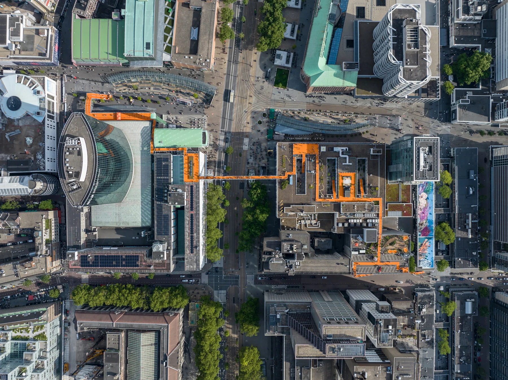
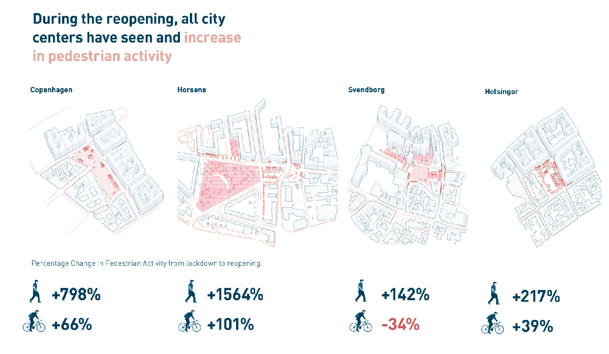

코로나 시대, 공공공간은 어떻게 디자인해야 하는가
“코로나 시대, 공공공간은 어떻게 디자인해야 하는가?”
코로나시대의 공공공간은 어떻게 변화 되어가야 할까? 이는 공공디자인을 하는 전문가들에게 주요 관심사 이다.
네덜란드 로테르담에서는 우리가 어떻게 대응해야 하는지를 알 수 있는 공공디자인이 2018년부터 이루어지고 있는데 바로 18.5㎢(약 5,600평)의 옥상 공간을 연결하여 펼쳐지는 ‘옥상 네트워크(Rotter damse Daken dagen)의 루프탑데이(Rooftop Days)’라는 프로그램이다. 로테르담은 제2차 세계대전 전쟁 후 도시를 개발하면서 많은 현대식 건축물들이 생겨났는데 모던한 디자인 덕분에 상당수의 넓은 옥상공간도 자연스럽게 생겨났지만 그 활용도는 거의 없었다. 로테르담 시 당국은 2018년부터 지붕 및 옥상의 가치를 재발견하는 ‘루프탑데이’를 진행하고 있다.
임시적이고 참여적인 이 공공디자인 프로젝트를 통해 옥상이라는 틈새공간이 얼마나 건강하고 활기차고 포용적인 공간이 될 수 있는지 가능성을 보주며 매력적인 도시로 디자인되는데 어떻게 기여할 수 있는지 보여주고 있다. 이 디자인을 통해 로테르담 도심을 열린 실험실로 보고 영감을 주는 참여 공간으로 변모시켜 로테르담 옥상 공간의 잠재력을 느끼게 한다. 또한 지붕의 가능성 발견을 위해 옥상에서 임시적이지만 지속가능하고 혁신적인 프로젝트를 운영함으로써 옥상 공간 활용 국제적인 모델을 제시하고 있다.
[ 로테르담 루프탑데이. 출처 : ]

루프탑데이에서는 로테르담 건물에 평소 개방되지 않은 옥상공간을 활용하거나 연결하여 로테르담의 도시 경관을 즐기고, 영화제, 연극제 등의 다양한 문화 프로젝트들이 있는데 특히 건축 및 디자인 스튜디오인 MVRDV가 설계한 옥상과 옥상을 연결한 거대한 옥상 산책로를 만든‘로테르담 루프탑워크(Rotterdam Rooftop Walk)’도 유명한 프로젝트이다. 이 루프탑워크는 네덜란드를 상징하는 오렌지색 산책로로 공중에 설치된 통로의 길이만 600m이며 마치 건물사이사이를 날아가듯이 다니며 다양한 도시 풍경의 시퀀스를 느낄 수 있다.
루프탑데이는 단순히 풍경적인 것 뿐만 아니라 지속가능한 도시 의제에 대해서도 고민하게 하는데 도시의 녹지율을 올리고 열섬효과를 줄이는 옥상공원과 꽃 모양의 풍력발전기와 태양광 패널을 통한 친환경 에너지 허브로서 옥상 그리고 도시 항공교통 시대를 대비한 드론 착륙장 등의 다양한 도시의제와 관련한 프로젝트들이 설치되었다. 이를 통해 전 세계적으로 전체 2%만 활용되고 있는 옥상이 환경문제, 기후변화, 공공공간부족, 에너지문제 등 지속가능한 도시 구축의 대안적 가능성으로서 잠재력이 있음을 알리고 있다.
이러한 도시 공간의 임시적 사용을 통한 대안 제시는 코로나시대를 겪으며 더 그 가치를 더하게 되었는데 소위 Tactical Urbanism으로 통용되던 도시공간의 임시적 실험을 통한 대안만들기가 각국에서 공공디자인의 실천적 대안으로 각광받고 있다. 루프탑데이나 파킹데이와 같이 외부 공공공간의 임시적 활용에 위해 코로나 시대 이후의 변화를 조사한 프로그램도 있는데 덴마크의 Gehl Institute와 Realdania라는 조직이 코펜하겐 지방 자치 단체와 함께 진행한 ‘Public Spaces & Public Life during COVID-19’라는 조사관찰 연구이다.
[ 덴마크도시의 COVID이후 보행량 증가. 출처:Public Spaces & Public Life during COVID-19]

이는 4개의 덴마크 도시에 대해 80명이 넘는 현장 조사연구원과 협력하여 COVID-19의 폐쇄 및 재개방의 2단계에 걸쳐 공공 공간이 우리 지역사회의 코로나에 의한 큰 변수에 대해 어떻게 대응하고 변화하는지 관찰하고 해석하는 의미있는 연구를 진행하였는데 이 조사를 통해 사람들은 COVID19 폐쇄기간동안 사람들은 한 장소에서 더 많은 시간을 보내는 경향이 있었으나 새로운 재개방 기간에는 사람들은 더 많이 움직이나 특정 공공공간에 덜 머무는 경향이 조사된 것으로 보아 루프탑워크와 같은 새로운 보행로의 유형이 제공되는 것이 필요할것으로 보인다.
또 하나의 조사는 공공공간에서 더 많은 외부 놀이와 운동 등의 외부활동 비율이 증가한 것인데 코로나로 인해 외부 레크리에이션, 운동은 밖에서 시간을 보내는 새로운 동인으로서 더 중요한 요소가 되었다. 특이한 점은 사람들은 여전히 봉쇄 기간 동안과 같은 이유로 밖에서 시간을 보내고 있지만 유형은 다르다. 예를 들면 운동과 놀이의 비중이 달라진 것인데 코로나 이후 운동의 비중이 더 많아졌음을 알 수 있었다. 그에 따른 근린안에서의 다양한 공간의 제공이 필요하다.
코로나 이후 걷는 것이 가장 안전한 이동으로 인식하게 되었다는 것을 조사에서도 알 수 있는데 물론 안전한 개인 차량 이용 의지도 높아졌으나 걷기와 자전거를 타고자 하는 의향은 더 높아졌음을 알 수 있으므로 자전거도로와 도심 보행로 공간의 확장이 포스트 코로나 시대에 더 요구될 것이다.
기존과 다른 도시 공공공간을 임시적으로 사용하는 것은 COVID로 인해 예상치 못하게 다가온 문제해결을 위해 기존의 방식과는 다른 공공 부문, 민간 기업, 문화 기관 및 시민들 간
의 공동 목표를 달성의 수단을 제공했다. 공공공간의 임시적이고 전략적인 사용은 민간과 공공의 합리적인 합의를 통해 시민들이 쉽게 준수하고 책임의식을 공유하는 거버넌스 모델로도 발전해가고 있다.
거버넌스와 연계하여 지역의 공공문제를 임시적으로 해결하고자 하는 Tactical Urbanism의 실행을 통한 일시적인 도시 해결책은 많은 도시들이 위기를 대처하는데 도움을 준 것으로 보이며, 이것들은 도시 공간의 긍정적인 급진적인 변화를 이끌 수 있다는 것을 증명하였다.
COVID는 편안하게 걷고 자연 환경에 쉽게 접근할 수 있는 능력과 같은 기본적인 건강과 공공공간의 중요성을 알려주었고 도시 공원, 자연, 그리고 열린 공공공간은 COVID 동안 이웃들에게 공공 생활의 생명줄 역할을 하는 중요한 가치를 얻었다. 이는 루프탑워크와 같은 도시 내 공공공간에 대한 실험에 우리가 관심을 가져야 할 이유이다
기록기반 추가 복구 텍스트 — 위치 대조 필요
Section0/paragraph-0006/record-3029
[ 로테르담 루프탑데이. 출처 : www.rotterdamsedakendagen.nl ]
이 글의 판본과 수록 정보 ＋
집필 폴더의 자료; 실제 작성자·집필 기여 미확정
본문·제목 대조로 기존 목록에서 빠진 PDF 판본을 추가 연결.
- 수록 자료
- 코로나시대 공공공간은 어떻게 디자인해야 하는가2.hwp
- 자료의 날짜 단서
- 기록 없음 · 실제 발표일과 다를 수 있습니다.
- 관련 파일
- 4개 / 서로 다른 본문 3종